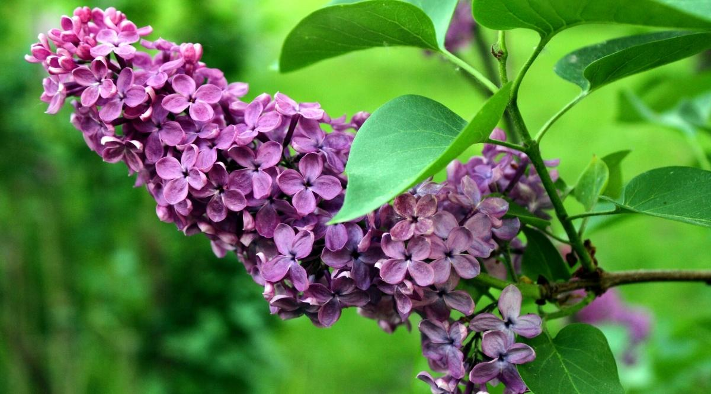

My favorite plant: Lilac Bush
About Lilacs
Lilac plants are deciduous, with deep green leaves arranged oppositely along the stems. The leaves are usually simple with entire margins, though the leaves of some species are lobed or compound. The small four-petalled flowers are borne in large oval clusters. The fruit is a leathery capsule.
The common lilac is called Syringa vulgaris
From southeastern Europe, it is widely grown in temperate areas of the world. There are several hundred named varieties with single or double flowers in deep purple, lavender, blue, red, pink, white, and pale creamy yellow. The common lilac reaches a height of approximately 6 metres (20 feet) and produces many suckers (shoots from the stem or root). It may be grown as a shrub or hedge or, by clearing away the suckers, as a small tree.
Other varieties
The weaker-stemmed Persian lilac (S. persica), ranging from Iran to China, droops over, reaching about 2 metres (6.5 feet) in height. Its flowers usually are pale lavender, but there are darker and even white varieties.
Other decorative species are the dwarf Korean, or daphne, lilac (S. pubescens), about 1.5 to 3 metres (about 5 to 10 feet) tall, with lavender-pink flowers; the 4-metre- (13-feet-) tall nodding lilac (S. komarowii) of China, with pinkish flowers; and the Hungarian lilac (S. josikaèa), about 3 metres tall, with scentless bluish purple flowers. The Chinese, or Rouen, lilac (S. chinensis) is a thickly branched hybrid, a cross of the Persian and common lilacs.